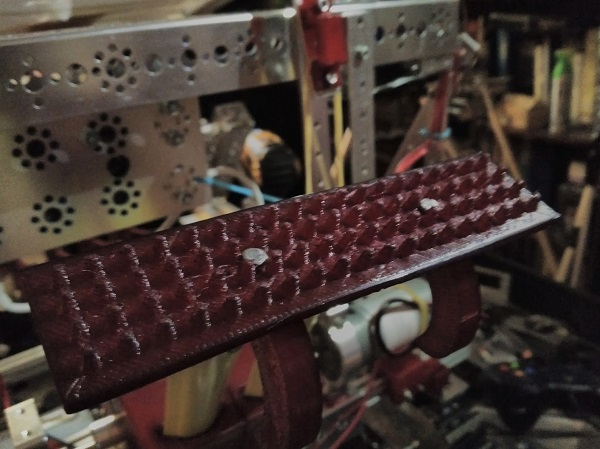

Today, we realized that the tape-measure attachment could have multiple functions. So, we designed an attachment to the tape measure that can push any buttons, including people's own. Max designed it in PTC and then printed it. We have yet to actually test it on the robot, but it works in-hand.
This is just our first design, and it has not been tested much. We feel that we should redesign the spikes to be deeper in the next version.